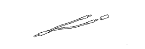
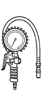
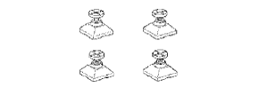
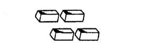

Water Pump Assembly (2GR-FE) Preparation [Installation]
 | 09213-70011 | Crankshaft Pulley Holding Tool |
| (09213-70020) | Bolt | |
 | 09224-00010 | O2 Sensor Wrench |
 | 09330-00021 | Companion Flange Holding Tool |
 | 09670-00020 | Front Crossmember Guide Tool |
 | 09843-18040 | Diagnosis Check Wire No.2 |
| 09870-60000 | Laser Radar Adjusting Reflector | |
 | (09870-60010) | Base Stand |
 | 09870-60040 | Reflector C |
 | 09960-10010 | Variable Pin Wrench Set |
 | (09962-01000) | Variable Pin Wrench Arm Assembly |
 | (09963-00700) | Pin 7 |
 | 09991-70200 | TaSCAN Set |
 | 09010-3C110 | Hexagon Socket Wrench Set |
 | (09013-6C110) | Socket Hexagon 6mm |
 | 09090-04020 | Engine Sling Device |
| Vacuum Pump | ||
| Vacuum Pump Adapter | ||
| Air Conditioner Tool Set HFC-134a(R134a) | ||
| Halogen Leak Detector | ||
 | KTL-12C | Timing Light (Current Detection Type) Supplied by Banzai Ltd. |
 | RC-3TC | Resin Radiator Cap Tester Adapter Set Supplied by Banzai Ltd. |
 | RCT-2A | Radiator Cap Tester Supplied by Banzai Ltd. |
| IRC-3TC | Resin Radiator Cap Tester Adapter Set Supplied by Iyasaka Co., Ltd. |
| RCT-3 | Radiator Cap Tester Supplied by Iyasaka Co., Ltd. |
 | TL-12C | Timing Light (Current Detection Type) Supplied by Iyasaka Co., Ltd. |
 | AG-8006 | Tire Pressure Gauge Supplied by Banzai Ltd. and Iyasaka Co., Ltd. |
 | QL-100N | QL Torque Wrench (100N) Supplied by Banzai Ltd. and Iyasaka Co., Ltd. |
| QL-200N | QL Torque Wrench (200N) Supplied by Banzai Ltd. and Iyasaka Co., Ltd. |
| QL-25N | QL Torque Wrench (25N) Supplied by Banzai Ltd. and Iyasaka Co., Ltd. |
| QL-50N | QL Torque Wrench (50N) Supplied by Banzai Ltd. and Iyasaka Co., Ltd. |
 | TMR-L | Level for Millimeter Wave Radar Supplied by Banzai Ltd. and Iyasaka Co., Ltd. |
| Chain Block | ||
 | PLA-15 | Height Adjustable Attachment Supplied by Banzai Ltd. |
 | PLA-2 | Plate Lift Attachment Supplied by Banzai Ltd. |
 | UEL-500N | Universal Engine Lifter Supplied by Banzai Ltd. |
 | IUL-500T | Universal Engine Lifter Supplied by Iyasaka Co., Ltd. |
 | IUL-B | Height Adjustable Attachment Supplied by Iyasaka Co., Ltd. |
 | NCH-201 | Plate Lift Attachment Supplied by Iyasaka Co., Ltd. |
| Tape Measure (5m) | ||
| CO/HC Meter | ||
| Toyota Genuine Auto Fluid WS | ||
| Toyota Genuine Super Long Life Coolant | ||
| Toyota Genuine Engine Oil | ||
| RefrigerantHFC-134a (R134a) | ||
| String 11m or Longer (Not Easily Snagged or Broken) | ||
| Aluminum Foil (Kitchen Type Acceptable) | ||
| Chalk | ||
| Plumb Bob | ||
| Compressor Oil (ND-OIL8) Supplied by DENSO Corporation | ||
| Refrigerant Recovery/Recycling Machine Supplied by DENSO Corporation | ||
| Adhesive1324 V93500114 Supplied by Tacti Corporation | ||
| Adhesive1344 V93500115 Supplied by Tacti Corporation |